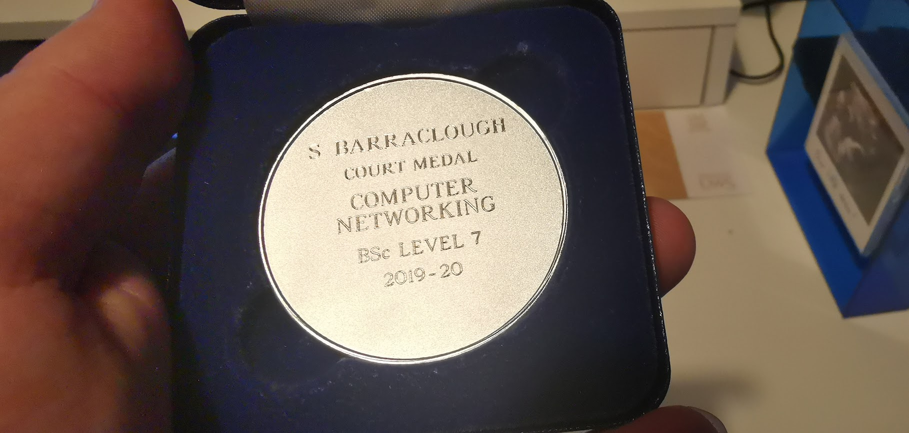

- Into to web development = Pass
- Professional development in computing = Pass
- Computer systems = Pass
- Into to programming = Pass
- Cisco CCNA 1 = Pass
- Business Technology = Pass
- Mathematics for computing = Pass
Court Medal Achievement
The Court Medal Achievements are awarded at each level (year) of each programme for the best overall student performance in that group.
